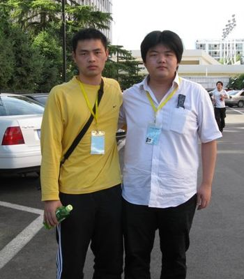
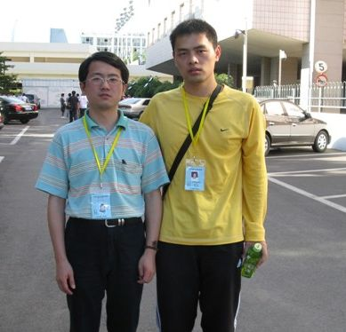
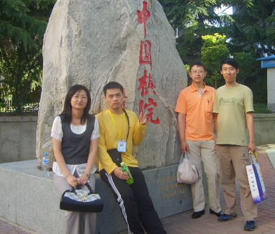
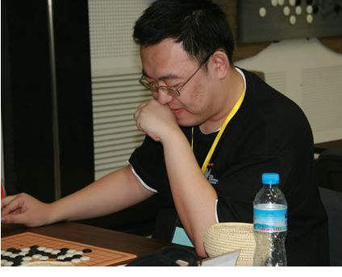
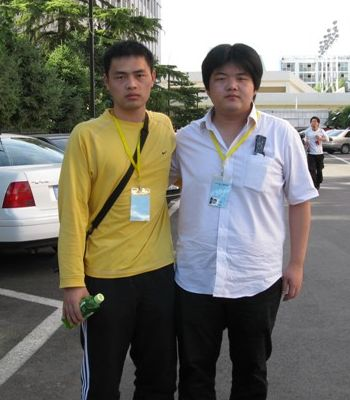
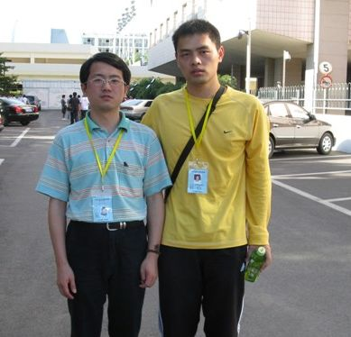
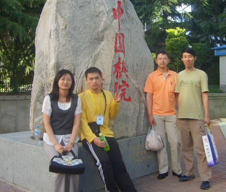
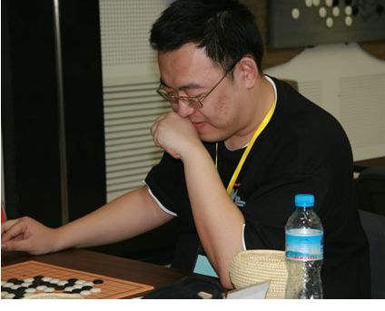
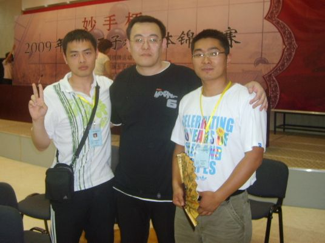

比赛小结
#1 比赛小结 作者：飞哥 发表时间：2009-5-30 15:02:20
很郁闷，由于家里不支持，我一直没走到实战去。我的良师--徐炳继，如慈父般一直关心我。我很难受，本来告诉他今年我要去比赛的。
“借助阳光快乐起来”这是老师对我的希望。老天，为什么我的心总是，在阳光照不到的角落。
四个不认识的朋友托人找我给他们集训，参加全团。我答应了，但条件是带上我们家族的名字。四个人中有一个至今比赛完仍未认识。其中2个定式一点不懂，也不愿意学，再说这么几天学也来不及。我花了九天给其中一个有基础的集训（14瑞星15疏星16斜月17山岚名新18流慧19松月20明星21残月寒星22长金星,溪峡月23实战），他肯学，这点我非常喜欢，他的名字--茗弈风云（郭凯明）。他很专心的学，肯主动的问，虽然我能力有限，但我倾囊而授。他叫我姐姐。他出发了，我叮嘱他多带几件衣服，带上冲电器刮胡刀什么的，火车上买本五子棋书看尽心就好,不要有思想包袱
。到了北京第一天，他给我发消息：姐姐我好想哭，人家都在一起，又说又笑，研究棋，又吃饭。我......不过我不在乎这些，我一定要下好每一盘棋！我哭了，心很酸。我告诉他：“弟弟，虽然你是一个人，但姐姐一直在你身边，你并不孤独。正好趁这机会自己冷静理清思路，为明天的比赛做好准备。”弟弟的委屈我明白也理解，但此时，我只能从积极的一面去鼓励他。第一天比赛结束，弟弟给我发信息，成绩很不理想，他觉得对不起我，甚至说想死的心都有。我回到：“弟弟，人生如棋，不能轻易放弃呀，姐姐对你有信心！社里大家也都很关心你。抬起头，鼓起勇气。记住四不要乱冲，有的便宜不能贪，注重棋形感觉的培养， 对算过的棋进行复算，多算几次。”第二天开始，弟弟的成绩上升了。他开心的不停给我发消息，赢了谁，和谁下平了等等。我感觉他适应环境了，才放下了心。最后茗弈东北新星队得了25名。在这样的条件下我觉得很不错了，我为弟弟骄傲！社里的朋友问起我风云怎么样？我的回答只有2个字：很棒！
哥哥27刀带领的一群小孩就没那么顺利了。第一天成绩还不错，儿子和江苏一台祁观下和了！比赛结束后场内外议论纷纷。但毕竟是孩子，后边就开始乱下了，极不稳定，这点我早预料到了。比赛前给儿子母亲反复交代，叫他一定下慢，下慢。可这小子不会听话的，34支队伍中所有队员最快的一个。丁海锋在多次必胜情况下下输，人家冲4或者活3他还在做杀，还是王姿雯表现比较稳定。
傅亮带领的江苏队，成绩不错。相信在亮的带领下江苏来年会更上一层。
［ 梦醉南天 于 2009-5-30 15:07:04 时花20金币送鲜花一朵］
［ 岳麓小棋后 于 2009-5-30 15:19:59 时花20金币送鲜花一朵］
［ 慕 于 2009-5-30 15:38:32 时花20金币送鲜花一朵］
［ wrwak 于 2009-7-8 18:37:59 时花50金币砸了你一个臭鸡蛋］
［ wrwak 于 2009-7-8 18:38:09 时花50金币砸了你一个臭鸡蛋］
［ wrwak 于 2009-7-8 18:38:15 时花50金币砸了你一个臭鸡蛋］
［ wrwak 于 2009-7-8 18:38:22 时花50金币砸了你一个臭鸡蛋］
［ wrwak 于 2009-7-8 18:38:28 时花50金币砸了你一个臭鸡蛋］
［ wrwak 于 2009-7-8 18:38:34 时花50金币砸了你一个臭鸡蛋］
#2 Re:比赛小结 作者：岳麓小棋后 发表时间：2009-5-30 15:14:11
支持一个
PS：
罗马王子该改叫黑马王子了
长江后浪推前浪，江山代有人才出，试看将来的棋坛，必将是新人的天下！这些孩子是未来的潜力股。。。
#3 Re:比赛小结 作者：撒蓉儿 发表时间：2009-5-30 15:18:17
他给我发消息：姐姐我好想哭，人家都在一起，又说又笑，研究棋，又吃饭。我......不过我不在乎这些，我一定要下好每一盘棋！我哭了，心很酸。我告诉他：“弟弟，虽然你是一个人，但姐姐一直在你身边，你并不孤独。正好趁这机会自己冷静理清思路，为明天的比赛做好准备。”弟弟的委屈我明白也理解，但此时，我只能从积极的一面去鼓励他。第一天比赛结束，弟弟给我发信息，成绩很不理想，他觉得对不起我，甚至说想死的心都有。我回到：“弟弟，人生如棋，不能轻易放弃呀，姐姐对你有信心！社里大家也都很关心你。抬起头，鼓起勇气。记住四不要乱冲，有的便宜不能贪，注重棋形感觉的培养， 对算过的棋进行复算，多算几次。”第二天开始，弟弟的成绩上升了。他开心的不停给我发消息，赢了谁，和谁下平了等等。我感觉他适应环境了，才放下了心。最后茗弈东北新星队得了25名。在这样的条件下我觉得很不错了，我为弟弟骄傲！社里的朋友问起我风云怎么样？我的回答只有2个字：很棒！
读完蓉儿被深深的感动，眼睛湿润了，赛前看到姐姐不厌其烦指导，仅仅九天的集训，这样紧张的的时间，风云能够赛出这样的成绩，已经很棒！很棒！蓉儿为风云祝贺，为姐姐感到高兴！
［ 茗弈小刀 于 2009-5-30 16:45:15 时花20金币送鲜花一朵］
#4 Re:比赛小结 作者：梦醉南天 发表时间：2009-5-30 15:20:16
人生如棋，做什么都不能轻易放弃,呵呵#5 Re:比赛小结 作者：醉了 发表时间：2009-5-30 15:24:28
28号下午幸遇27刀，简单聊了几句，让我看到中国王子棋的希望，这些为五子棋事业倾心奉献的人值得我们敬重。。。。。。［ 撒蓉儿 于 2009-5-30 15:27:32 时花20金币送鲜花一朵］
#6 Re:比赛小结 作者：岳麓小棋后 发表时间：2009-5-30 15:27:07
什么时候街头巷尾常可见黄发垂髫怡然对弈，那么五子棋的普及化算是成功了［ 失落刀 于 2009-5-30 15:41:21 时花20金币送鲜花一朵］
#7 Re:比赛小结 作者：wrwak 发表时间：2009-5-30 15:32:21
几岁了啊，不需要家里支持，喜欢就去做就是了。
［ 飞哥 于 2009-7-8 18:43:28 时花50金币砸了你一个臭鸡蛋］
［ 可乐可口 于 2009-7-8 18:52:40 时花50金币砸了你一个臭鸡蛋］
#8 Re:比赛小结 作者：失落刀 发表时间：2009-5-30 15:46:05
到了北京第一天，他给我发消息：姐姐我好想哭，人家都在一起，又说又笑，研究棋，又吃饭。我......
这句话触动了我。
#9 Re:比赛小结 作者：日月之合 发表时间：2009-5-30 16:31:14
一直以来，我没有迷上任何游戏！别人玩的如火如荼，不能自拔，整天聊自己游戏心得的时候。我依旧捧着自己看都看不懂的书在看！不是喜欢看那样的书，而是习惯！去年背着沉重的伤痛回到家里，来调整自己，在家我没有话说！只是坐在电脑桌边， 不聊天，也不看电影，不听音乐！象没有灵魂的人在禅坐！无意间遇到了 下五子棋的姐姐！帮我开导，顺便也带我下棋！不知是不是姐姐的缘故，我喜欢上了五子棋！每当我提高一点的时候，我就越感觉五子棋的难！但我承受不了 难的时候，我四处拜师。开始都没有几个理我！还好后有江苏的一位阿姨会后手八卦对我说了一点，让我在五子棋的路上有走了一段时间。到现在了，我的师傅也下不过了！可我更感觉难了！我没有办法了，我就找经常砍我的人，看他们都有家族，尤其是茗弈，砍我最多！我几乎没有赢过，我非常想加入茗弈家族，想在五子棋上能 更高有一些！进来之后我才知道，我什么都不会！基本的都不会，现在我重新回到了迷茫的时候，也是我调整自己的时候了！何去何从？［ 茗弈小刀 于 2009-5-30 16:43:38 时奖励此帖[金币加 20 威望加1］
#10 Re:比赛小结 作者：吃大米饭的鱼 发表时间：2009-5-30 16:54:23
看了感慨很深，为刀姐的善良与真诚，为风云的艰辛与执着。我想说风云，你真的很棒！#11 Re:比赛小结 作者：独爱五子连珠 发表时间：2009-5-30 16:56:45
姐姐我好想哭，人家都在一起，又说又笑，研究棋，又吃饭。我......不过我不在乎这些，我一定要下好每一盘棋！我哭了，心很酸。看到这里我也哭了。
#12 Re:比赛小结 作者：寂寞的烟 发表时间：2009-5-30 16:59:14
刀姐写首诗吧！
#13 Re:比赛小结 作者：坏蛋色色色 发表时间：2009-5-30 17:02:40
 明年看我的！
明年看我的！
#14 Re:比赛小结 作者：习惯下棋的时候抽烟 发表时间：2009-5-30 17:16:15
刀刀辛苦了吧这段时间，风云小小年纪很坚强很不错，为你喝彩。#15 Re:比赛小结 作者：五子痴 发表时间：2009-5-30 17:43:10
以后的路会越走越顺~
#16 Re:Re:比赛小结 作者：梦在哪 发表时间：2009-5-30 17:50:49
引用：赞同！
原文由 五子痴 发表于 2009-5-30 17:43:10 :以后的路会越走越顺~
#17 Re:比赛小结 作者：静待花开 发表时间：2009-5-30 17:53:19
刀刀能和家里好好谈谈吗？大家都希望你能带队去。
#18 Re:比赛小结 作者：英雄九段 发表时间：2009-5-30 23:43:17
都是职业棋手吗？
怎么有那么多时间啊
#19 Re:比赛小结 作者：越狱行辕 发表时间：2009-5-31 1:25:00
我等着再战风云
#20 Re:比赛小结 作者：茗弈小刀 发表时间：2009-5-31 11:18:31
风云的成绩是三胜四负二和。#21 Re:Re:比赛小结 作者：沈毅 发表时间：2009-5-31 13:16:14
引用：
原文由 岳麓小棋后 发表于 2009-5-30 15:27:07 :
什么时候街头巷尾常可见黄发垂髫怡然对弈，那么五子棋的普及化算是成功了［ 失落刀 于 2009-5-30 15:41:21 时花20金币送鲜花一朵］
有一阵经常经过上海火车站，看见一个被人切掉左腿、左手手掌、右手只剩三根手指的人在那里摆象棋残局骗人；当然围观的人群少不了他的同伙。。。
五子棋真正普及的那天，希望不会出现类似的情况。
#22 Re:比赛小结 作者：茗弈小刀 发表时间：2009-5-31 14:40:53
 哈哈，LS真幽默！
哈哈，LS真幽默！
#23 Re:比赛小结 作者：二十七刀 发表时间：2009-5-31 21:56:45
明年学校不组队的话,我不会再代表台州队；小刀做领队的话,我将坐镇茗弈一台出战。
再组个茗弈少儿队，戴宇轩、王姿雯、丁海锋三人全部替换掉，派二年级的顶上，家长全部陪同。
#24 Re:比赛小结 作者：不知 发表时间：2009-5-31 21:57:47
 27这个阵容恐怖..谁欺负谁遭谴责..
27这个阵容恐怖..谁欺负谁遭谴责..
#25 Re:Re:Re:比赛小结 作者：风花雪月小白 发表时间：2009-6-6 1:54:02
风云是谁啊？是不是和我下的张旭哦#26 Re:比赛小结 作者：越狱行辕 发表时间：2009-6-6 6:35:22
风云是郭凯明 锅大侠
#27 Re:比赛小结 作者：茗弈小刀 发表时间：2009-6-9 13:39:08
再发几张照片 

#28 Re:比赛小结 作者：茗弈小刀 发表时间：2009-6-9 13:40:51

#29 Re:比赛小结 作者：茗弈小刀 发表时间：2009-6-9 13:44:32

#30 Re:比赛小结 作者：水墨江山 发表时间：2009-6-9 13:51:48
2边辩论事实 一边不让讲话 这算什么事啊
有棋下的地方就有江湖~~~~
#31 Re:比赛小结 作者：柳叶儿 发表时间：2009-6-9 13:57:22
？？？？？？？？？？？
什么意思？
#32 Re:比赛小结 作者：wrwak 发表时间：2009-7-8 18:39:52
LZ 你太猥琐，砸鸡蛋还躲在中间的位置砸，下级生啊。
#33 Re:比赛小结 作者：飞哥 发表时间：2009-7-8 18:42:59
金币多挖，继续！
#34 Re:比赛小结 作者：wrwak 发表时间：2009-7-8 18:43:41
没了 ，你们想砸我的就来吧，我没还手之力了哦，哈哈。［ 飞哥 于 2009-7-8 18:44:40 时花50金币砸了你一个臭鸡蛋］
#35 Re:比赛小结 作者：刀学生 发表时间：2009-7-8 18:45:52
哈哈 小号也上吧，反正刀魂不在了。#36 Re:比赛小结 作者：飞哥 发表时间：2009-7-8 18:45:52
我也没了，有了我们继续吧，哈哈。
#37 Re:比赛小结 作者：刀学生 发表时间：2009-7-8 18:46:20
我不砸你了 我砸小刀，呵呵，你会不会更伤心啊 ，哈哈哈哈#38 Re:比赛小结 作者：飞哥 发表时间：2009-7-8 18:47:34
随便，反正砸着玩也没啥不知这鸡蛋能卖不？
#39 Re:比赛小结 作者：刀学生 发表时间：2009-7-8 18:49:14
哦，那我也得先找个砸小刀的理由哦。［ 可乐可口 于 2009-7-8 18:55:16 时花50金币砸了你一个臭鸡蛋］
#40 Re:比赛小结 作者：刀学生 发表时间：2009-7-8 18:56:15
嘿嘿 我不和小号理会，等我找到那个禁止发代码的贴再砸#41 Re:Re:Re:比赛小结 作者：团子亲卫队 发表时间：2009-7-8 19:03:54
引用：
原文由 沈毅 发表于 2009-5-31 13:16:14 :引用：
原文由 岳麓小棋后 发表于 2009-5-30 15:27:07 :
什么时候街头巷尾常可见黄发垂髫怡然对弈，那么五子棋的普及化算是成功了［ 失落刀 于 2009-5-30 15:41:21 时花20金币送鲜花一朵］
有一阵经常经过上海火车站，看见一个被人切掉左腿、左手手掌、右手只剩三根手指的人在那里摆象棋残局骗人；当然围观的人群少不了他的同伙。。。
五子棋真正普及的那天，希望不会出现类似的情况。
放心，不会有这一天的。